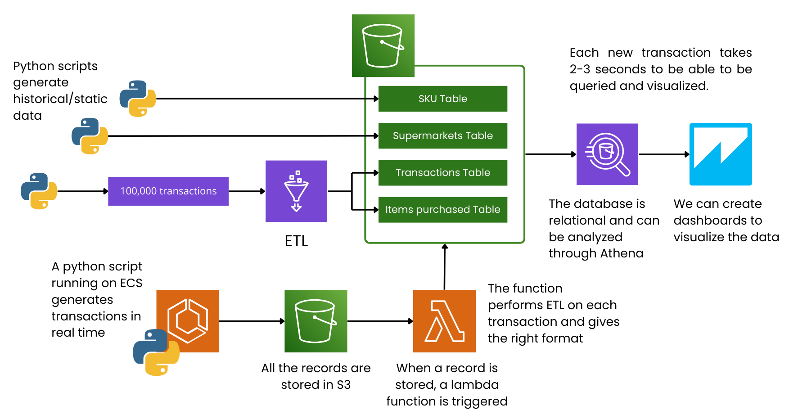
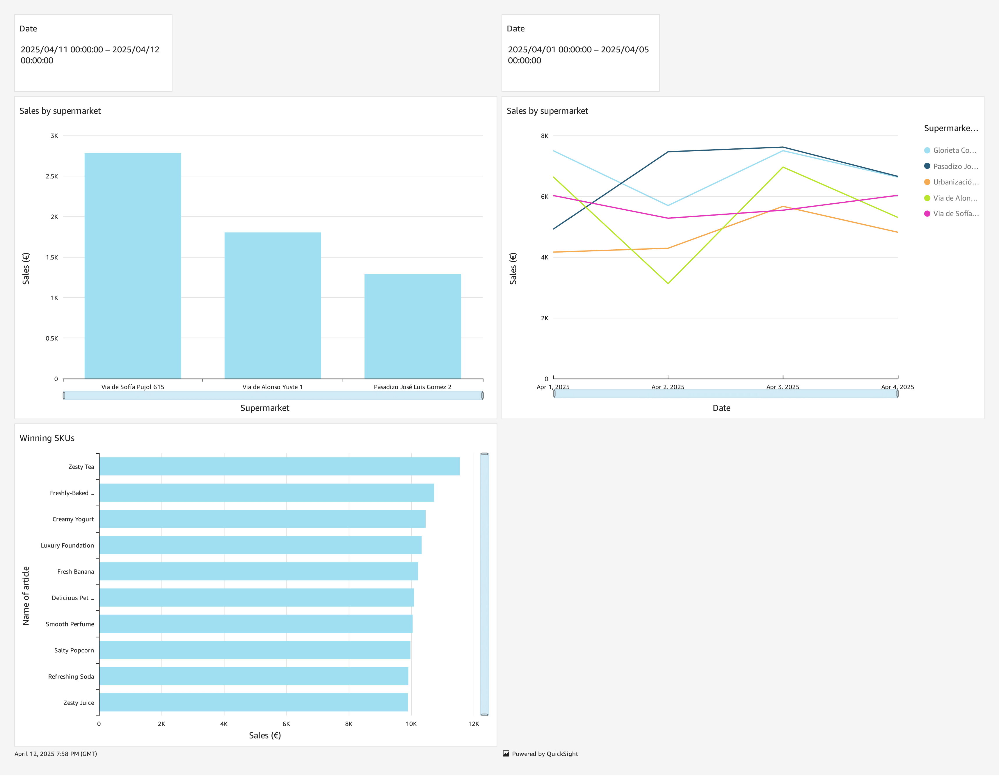

1. Introduction & Purpose
This project simulates a real-time data engineering setup that could run in a cloud environment (like AWS) to manage transaction logs for multiple stores (for example, a chain of supermarkets). It shows how you can combine historical (batch) data with real-time (streaming) data, store and query it for cheap, and see it all in near real-time.
The main idea is to have a scalable, low-cost pipeline that can handle data from many stores each second, then make that data available for analysis and dashboards within a few seconds (2–3 seconds after a transaction arrives). Even if there’s a lot of data, the cost stays small compared to the total revenue of a typical retail business.
2. High-Level Architecture
-
Historical Data
- Stored as four relational tables (explained later) in Amazon S3.
- Queried directly in Amazon Athena, which reads these tables from S3.
- Originally populated by Python scripts (to create data) and an AWS Glue job (to transform JSON logs into a relational format).
-
Real-Time Data
- A Python script runs in AWS ECS (Elastic Container Service), acting like a payment processor by writing fresh transaction logs into an S3 bucket.
- An Amazon S3 event trigger reacts whenever a new transaction file lands in that folder. This trigger calls an AWS Lambda function.
- The Lambda function reads the raw JSON, changes it to the right format, and appends rows to the transactions and transaction_items tables (kept in separate folders in S3).
- After that, these new records can be queried in Amazon Athena and seen in Amazon QuickSight right away. Just refresh QuickSight to view the latest data.
-
Visualization & Analytics
- Data is viewed in Amazon QuickSight dashboards.
- When a new transaction shows up, it usually takes just 2–3 seconds for it to be processed and appear on the dashboard.
- You can also use Athena for deeper queries, joining transaction data with SKUs and store info.

3. Historical / Static Data (Four Relational Tables)
All past data is stored in an Amazon S3 bucket but organized as four relational tables. Athena can query them like standard database tables. Below is a rundown of each:
2.1 supermarkets Table
- Columns:
store_id – A unique ID for each store (e.g., STORE0003).store_name – A randomly created store name (e.g., "Main Street Supermarket").store_location – A randomly generated location or city for the store.
- Explanation: This table holds basic details about each store in the chain. In this project, five stores are created by a Python script, but it can scale to any number of stores.
2.2 skus Table
- Columns (example set):
sku_id – A unique ID for each product (e.g., SKU07067).product_name – A randomly created product name.price – A randomly chosen or assigned price.
- Explanation: Contains info for each Stock Keeping Unit (SKU). We generated about 12,000 SKUs with a Python script, though this can be scaled up or down.
2.3 transactions Table
- Columns (example set):
transaction_id – A unique ID for each transaction (e.g., TX0000001).store_id – Links to the supermarkets.store_id where the sale happened.transaction_datetime – The timestamp of the transaction (e.g., 2024-04-10 19:22:28).
- Explanation: Each row is one transaction. It was first populated by a Python script that created ~100,000 transactions in JSON, which AWS Glue then turned into relational rows.
2.4 transaction_items Table
- Columns (example set):
transaction_id – Links to the transactions.transaction_id.sku_id – The product bought in that transaction.quantity – How many of that SKU were bought.
- Explanation: A transaction can have many SKUs, so this table shows the one-to-many link between a
transaction and its item lines. The JSON array of items in each transaction was changed into rows in this table by AWS Glue.
These last 2 tables get new data appended in real-time as transactions come in.
4. Dynamic / Real-Time Data Flow
-
Data Generation
- A Python script runs in an ECS container, constantly creating transaction logs (similar to a real payment processor).
- These logs are saved in real time to an "incoming" folder in S3.
- In an actual system, we’d connect to a payment processor or POS API. The setup would still be similar.
-
S3 Event Trigger
- When a new JSON file lands in the "incoming" folder, Amazon S3 sends an event to AWS Lambda.
-
AWS Lambda Transformation
- The Lambda function reads the raw JSON (which has transaction details plus SKU IDs and quantities).
- It converts that JSON into two groups of rows:
- One row for the
transactions table (transaction_id, store_id, transaction_datetime)
- Several rows for the
transaction_items table (one row for each item in the transaction).
- These rows are then added to the relevant folders in S3 that store the main files for each table.
-
Query & Visualization
- Athena automatically picks up these new data records in S3.
- A QuickSight dashboard (connected to Athena) can refresh to show these new transactions in just 2–3 seconds.
- Users only need to refresh their dashboard to see the updated data.
This process shows how near real-time ingestion is done with minimal fuss or cost.
5. Dashboard Visualization
Below is an image of the QuickSight dashboard (check your included image). It shows things like total sales by store, the top SKUs, and more. You can also filter by date in the dashboard.
Even if transaction volume is high, this setup scales nicely to manage thousands of transactions per second with nearly instant analytics.

6. Cost and Scalability
-
Cost Efficiency:
- S3 is very cheap storage, paying only for what you actually store.
- Athena charges by how much data you scan; partitioning can cut down these costs.
- AWS Lambda’s pay-per-invocation model, plus ECS’s scalability, helps keep costs low, even if there are lots of transactions.
-
Scalability:
- AWS services (S3, Lambda, ECS) can automatically handle spikes in data without you doing anything extra.
- For even more streaming options, you could use something like Kinesis Data Firehose.
- Overall, this system stays fast and cheap even as transactions increase, with the cost being tiny next to supermarket revenues.
7. Rationale for Using Lambda Instead of AWS Glue for Real-Time
In the beginning, AWS Glue jobs processed JSON logs into S3 tables. But they run on schedules and can get expensive if used too often, so they’re not great for real-time updates. S3 triggers with AWS Lambda are triggered right away whenever a new file appears, giving near-instant ingestion with lower costs per request—making the data pipeline both fast and economical.
8. Conclusion
This project is a sample of a real-time transaction data pipeline in the cloud, mixing batch methods for old data with quick updates for new data. It features serverless transforms with AWS Lambda, cheap storage in S3, easy querying in Athena, and a design that shows new transactions in dashboards within a few seconds. It’s great for high-volume retail use, staying both scalable and budget-friendly.